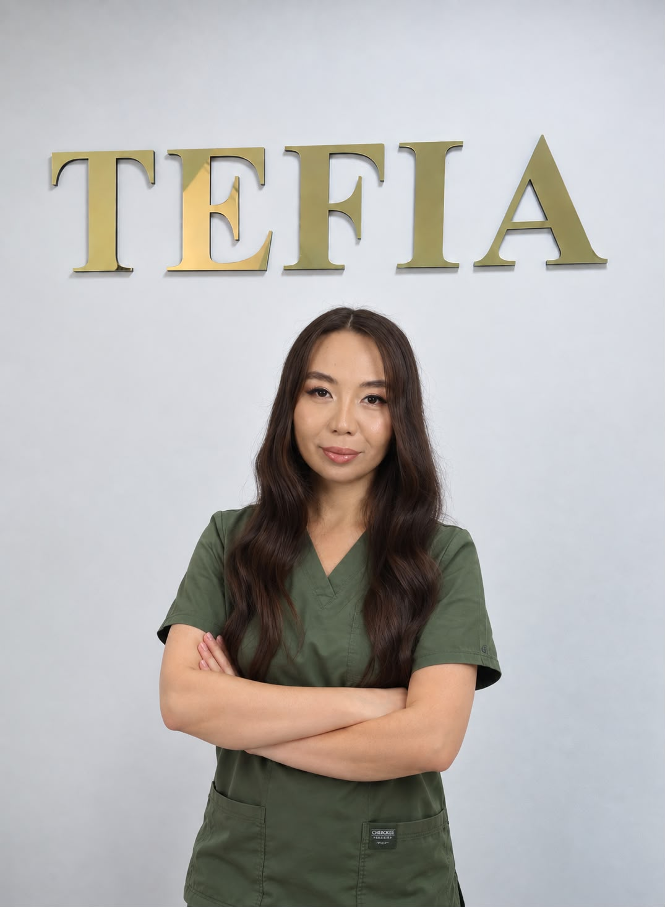
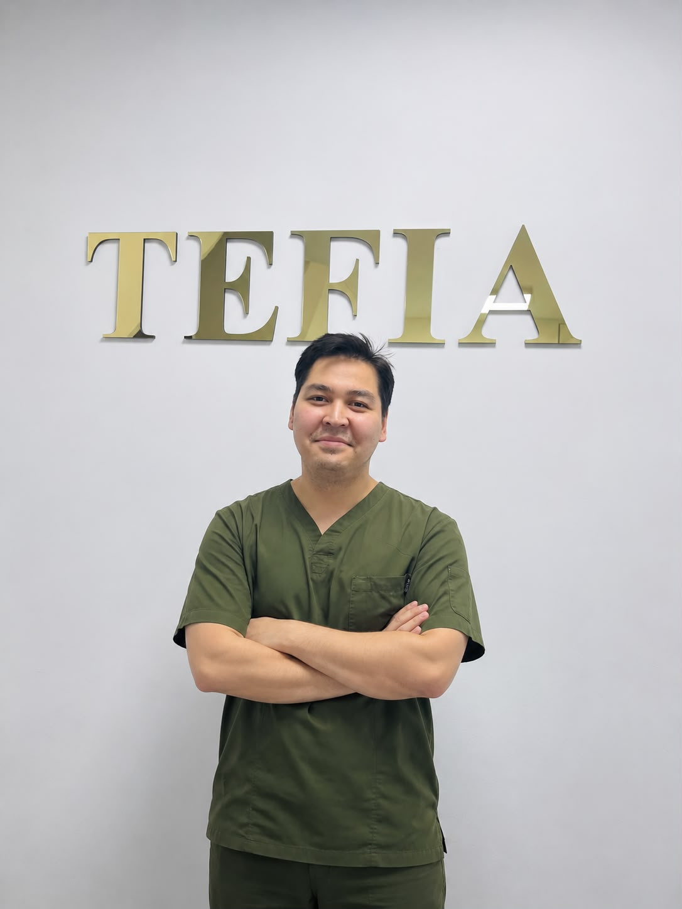
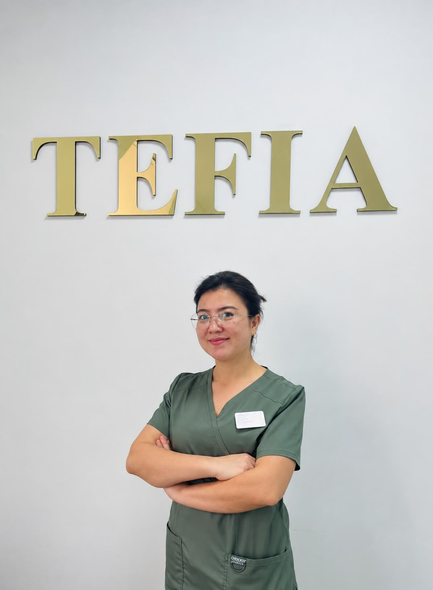
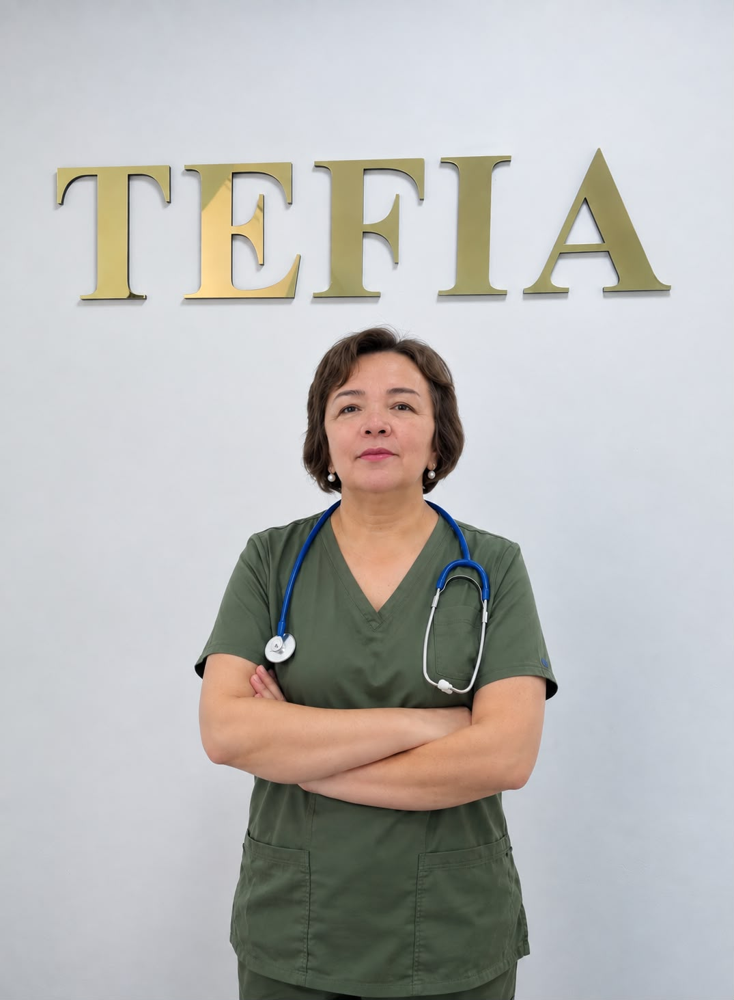

Малагаждарова Анар Жоламановна
Ведущий репродуктолог клиники. Подбирает протокол стимуляции, проводит пункции и переносы эмбрионов. Ведёт программы ЭКО, ИКСИ, криопротоколы и донорские программы.

Чистяков Владимир Владимирович
Отвечает за самое сердце клиники: эмбриологическую лабораторию. Оплодотворение, культивирование эмбрионов, витрификация и подготовка к переносу. Опыт работы в клиниках Украины.

Оксикбаева Жазира Сейтбековна
Ведёт беременность после программ ВРТ, включая ранние сроки и поддержку после переноса. Наблюдение до самых родов с учётом всей истории лечения.

Ізбасар Ұлжан Мұхтарқызы
Корректирует гормональный фон до и во время программы: щитовидная железа, инсулинорезистентность, СПКЯ. Эндокринное здоровье напрямую влияет на успех ЭКО.

Жарылқап Елемес Абатұлы
Диагностика и лечение мужского фактора бесплодия: спермограмма, гормональные нарушения, подготовка к программам ЭКО и ИКСИ.

Ирисбекова Назокат Абдурахмановна
УЗИ-мониторинг фолликулов во время стимуляции, фолликулометрия, скрининги беременности. Экспертная диагностика на каждом этапе программы.

Мусаева Рыскуль Алмасхановна
Оценивает общее состояние здоровья перед программой: допуск к ЭКО и наркозу, контроль хронических заболеваний, сопровождение во время беременности.